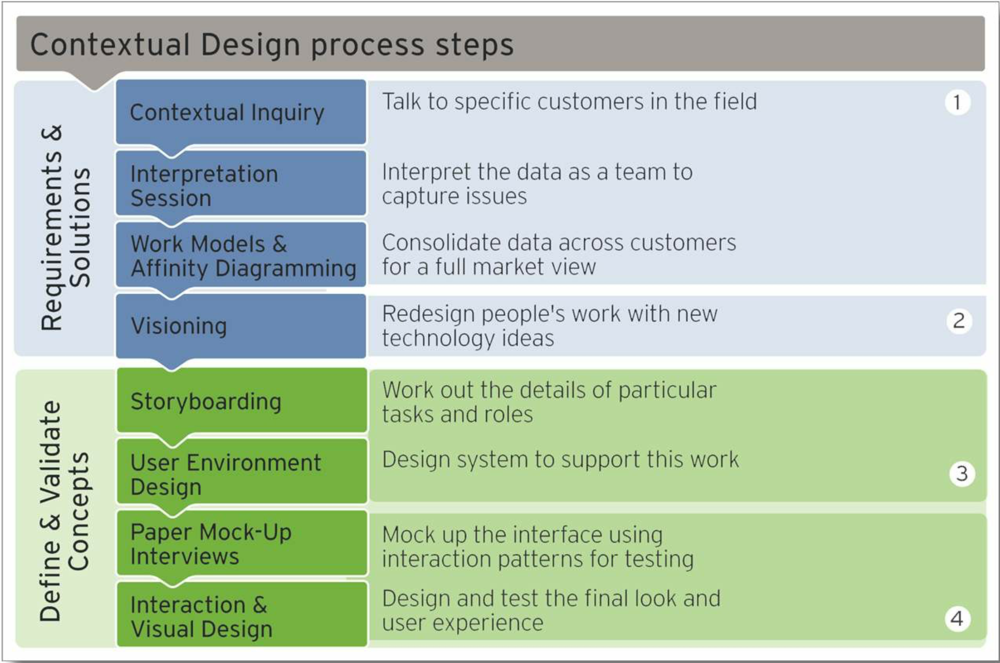

- 100 Days of UX
- Contextual Design
Contextual Design is an agglomeration of several research and design methods into
a customer-centered process that embeds designers into the customer's life and work and prescribes a
reliable course of action for the design process.
Contextual Design is Day 19 of 100 Days of UX, an exploratory effort to
survey the 100 methods of design outlined in
Martin and Hannington's Universal Methods of Design. For 100 consecutive days, I learn one new method
a day and write about it.
The recommended steps in the Contextual Design playbook are:
-
Contextual Inquiry. A method of data gathering where designers are embedded in
the users' world and get to observe and query what users' experiences. More on Contextual Inquiry
tomorrow.
-
Interpretation Sessions are structured debriefing sessions for each customer
contextual inquiry. These sessions involve not only designers but business people, developers, etc.
They are intended to enrich the process by getting a multitude of multidisciplinary views.
-
Work Models and Affinity Diagrams. Work models allow the team to model the data
around aspects of life and work. Flow models capture the "flow" of information, and
sequence models represent the temporal relationship between various tasks that
occur. Artifact, Cultural, and Physical are other work models that can be used.
-
Visioning and Storyboarding take the work models and use them
for generating concepts and working out the details.
-
User Environment Design reimagines (from a high level) a new way and flow of work
for the users. It documents the structure, function, and flow between "places" in the system.
-
Paper Mock-ups are then used to get feedback from customers on the structure,
function, and flow of the proposed design before it is coded and implemented.

Contextual Design spans the entire design process except for implementation at the end. Holtzblatt and
Beyer's book Contextual Design: A Customer-Centered Approach to Systems Design, and Holtzblatt's
follow up book Contextual Design Evolved, which updates the framework for how technology use is
evolving, are excellent resources for doing contextual design.
References
-
Martin, B., & Hanington, B. (2012). Universal Methods of Design: 100 ways to research complex
problems, develop innovative ideas & Design effective solutions. Rockport
Day 18 - Content Inventory and Audit
100 Methods
Day 20 - Contextual Inquiry